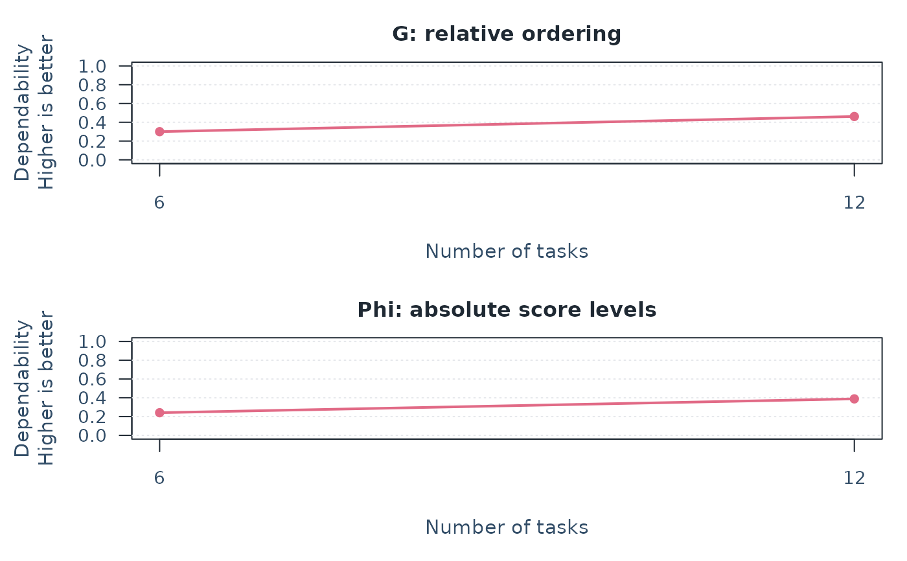
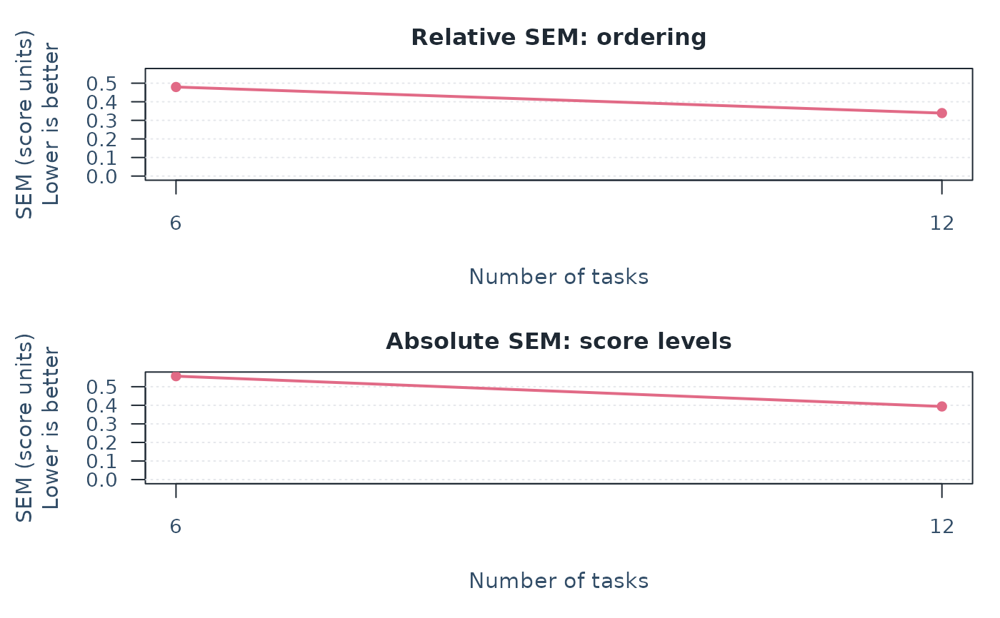
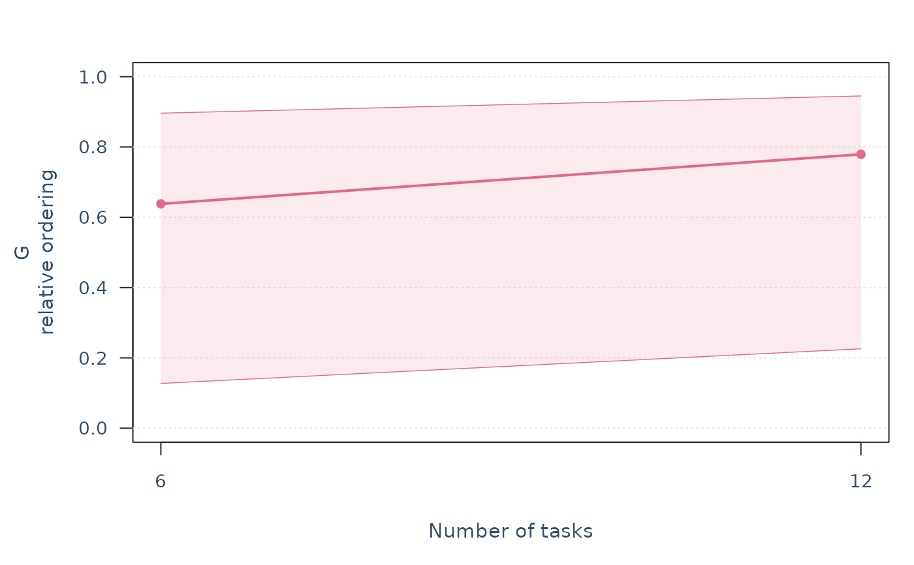
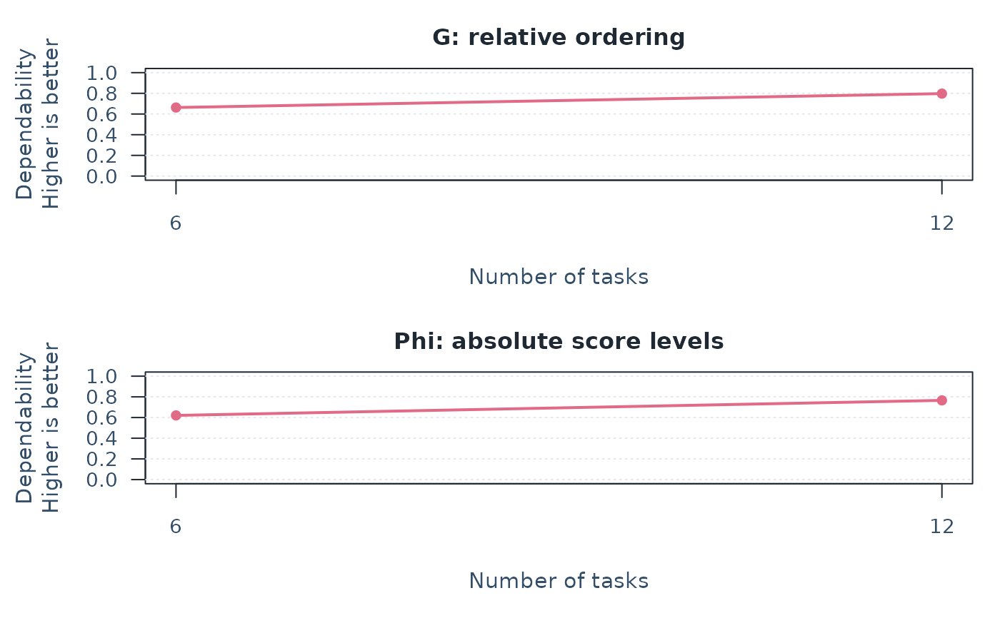

Plan measurement conditions with a D-study
Source:R/api-gstudy-entry.R, R/api-multivariate-gtheory.R
mfrm_d_study.RdWould adding tasks or raters make assessment scores more dependable? Use an estimated G-study to compare specified future designs for individual score components and optional weighted composites. Each scenario reports dependability and measurement error for mean scores over common random measurement conditions, such as tasks, raters, or occasions. Projection from an estimated G-study does not refit. Supplying an MFRM first estimates the separate main-effects G-study described below.
Usage
mfrm_d_study(x, design_grid = NULL, ...)
# Default S3 method
mfrm_d_study(x, design_grid = NULL, ...)
# S3 method for class 'mfrm_multivariate_gstudy'
mfrm_d_study(
x,
design_grid = NULL,
weights = NULL,
negative_components = c("raw", "genova_algorithm", "genova_ems"),
...
)
# S3 method for class 'mfrm_multivariate_d_study'
print(x, digits = NULL, row.names = FALSE, ...)Arguments
- x
A result from
mfrm_g_study(). A main-effects result frommfrm_generalizability()or a fitted MFRM uses the separate main-effects method, with its collapsed-residual assumptions. Dispatch preserves the source model; it does not select a new estimator.- design_grid
A nonempty data frame or named list with one positive integer count column per G-study facet. Both G-study routes accept the exact facet label or
n_<facet>, such asn_Raterandn_Task. Existing saved count-column names are also accepted: with therater/taskinterface, useRatersand/orTasksfor the included facets. Withfacets, use its exact labels, for exampleRaterandOccasionforfacets = c(Rater = "Assessor", Occasion = "Session"). The mapping is available inx$design$count_columns. Supply exactly one column per facet; extra columns, duplicate aliases and ambiguous matches are refused. Output keeps the saved count-column names, so existing plot and interval selections retain their meaning. Each row is one future complete balanced design preserving the G-study's crossed or nested structure. Fornesting = c(Rater = "Task"),Ratersmeans raters per task, not the total rater pool.NULLuses the G-study counts (children per parent for a nested facet) only when its retained data are complete and balanced; incomplete or unequal designs require an explicit grid. Counts need not match or exceed the G-study counts. Conditions are shared across persons and scores in every scenario.- ...
Arguments for the selected method. The fitted-MFRM method accepts arguments to
mfrm_generalizability(); already estimated G-studies reject unused arguments. Printing accepts arguments for its coefficient table.- weights
Optional named numeric vector for one composite, or a numeric matrix for several named composites. A vector must name every original score exactly once; matrix rows must name every score exactly once, and columns must have unique, nonempty composite names. Rows are matched by name, regardless of order. Every weight must be finite and each composite must have at least one nonzero weight. Signed weights allow difference scores, for example
c(Content = 1, Organization = -1). Weights are used as supplied, without normalization.NULLreports original scores only. Otherwise, each scenario reports the original scores once, followed by each composite. A vector's composite is named"Composite"; a matrix preserves its column names and order.- negative_components
Component treatment for D-study point projections.
"raw"(default) retains the original estimates."genova_algorithm"replaces negative variance components with zero;"genova_ems"first recalculates components by source-design expected-mean-square equations, substituting zero as each negative component is encountered. The latter choices require a complete balanced univariate ANOVA G-study with one or two supported crossed or nested random facets. Original G-study estimates remain unchanged. These options do not supply adjusted-estimator intervals.- digits
Display precision passed to the printed tables;
NULLuses R's current setting. Stored estimates are unchanged.- row.names
Logical; print table row names? Defaults to
FALSE.
Value
An mfrm_multivariate_d_study list containing coefficients
(scenario, counts of included facets, score/composite identity,
universe/relative/absolute variances under the selected treatment,
G/Phi, relative/absolute SEM, ComponentTreatment, and
row and metric-specific status, and ComponentPSD), covariances
(three matrices per scenario), design_grid,
weights (the supplied vector or matrix, reordered to the G-study score
order), component_diagnostics,
negative_components, effective_components,
effective_component_diagnostics, and gstudy (the unchanged source result).
summary() returns coefficients.
print() returns the same D-study invisibly without computing intervals.
summary.mfrm_multivariate_d_study() with intervals = TRUE explicitly
calculates and collects supported intervals, methods and source context.
print() also shows source level/row counts, future-plan conventions and
the supplied composite weights. Save the full result with saveRDS(d)
and reopen with readRDS() to preserve that context. A CSV of
summary(d) contains the coefficient table only; accompany it with the
weights, source design and row usage, future design and score convention.
Main-effects inputs instead retain their mfrm_d_study data-frame result;
see mfrm_d_study_main_effects for its fields and limitations.
Details
Start with a concrete comparison, such as six versus twelve tasks
for every examinee. Each row of design_grid is one scenario. With both
facets, data.frame(Raters = c(2, 4), Tasks = c(3, 3)) compares two versus
four raters at three tasks; expand.grid(Raters = c(2, 4), Tasks = c(3, 6)) requests all four combinations. These counts apply to
every person and score, not to the total number of observed ratings.
For facets = c(Rater = "Assessor", Occasion = "Session"), use
expand.grid(Rater = c(1, 2), Occasion = c(2, 4)). The same workflow
applies to any supported one- or two-facet model; extra columns cannot
introduce conditions absent from the G-study.
This is the primary D-study entry for one or several scores. It replaces
the public mfrm_multivariate_d_study() name without changing its result
class, component estimates, projections or uncertainty methods. For either
source model, summary(d) returns its full-precision coefficient table.
Optional interval summaries remain specific to the interaction-component
route. Main-effects projections do not acquire those interval methods.
Read summary(d) together with plot(d):
Gconcerns consistency of relative ordering, such as ranking examinees. It is not the probability of identifying the best person or the winner of a competition. Close leading scores can remain hard to distinguish even when G is high; this function provides no Person-rank intervals.Phiconcerns absolute score levels and also counts shifts from easier tasks or more lenient raters as error. It is not pass/fail accuracy.RelativeSEMandAbsoluteSEMexpress these errors in the units of the mean score or composite. Smaller SEMs mean less error. They are not confidence intervals for G or Phi.
Larger G/Phi and smaller SEM indicate greater dependability under the
model. There is no universally acceptable coefficient: consider the use
of scores, consequences of error, and workload before choosing a design.
Compare a chosen score/composite and metric across feasible plans. For
example, data.frame(Raters = c(2, 3, 4), Tasks = c(6, 4, 3)) holds the
number of ratings per person at twelve. It does not hold examinee task
burden or total cost constant. The largest projected coefficient is a
point-estimate ranking, not evidence that one plan is reliably better.
Consider the size of the projected difference and which differences
would matter for the assessment. Small rank changes need not imply large
practical losses. If a metric is unavailable for any candidate, comparing
only the remaining values does not resolve the full planning question.
plot(d, type = "sem") shows the SEMs. Plots select a sole composite
by default, or the first score when there are no composites. With several
composites, specify one with plot(d, composite = "Equal"); use
plot(d, score = "V") to inspect an original score named V. The title
metadata identifies the plotted score and any composite weights; it is
returned with the plot, with titles and notes omitted from the figure
by default.
Check GStatus, PhiStatus, RelativeSEMStatus, and AbsoluteSEMStatus:
each explains the corresponding metric's availability. NA means
unavailable, not zero dependability. ComponentPSD separately flags
covariance components needing review. See plot.mfrm_multivariate_d_study() for
interpreting curves and unavailable estimates.
For a balanced one-facet ANOVA source, confint.mfrm_multivariate_d_study()
returns exact F intervals for G and generalized confidence intervals for
Phi (parm = "Phi") under independent normal random effects, using the
source study's degrees of freedom at each requested future count. Phi
includes Monte Carlo endpoint diagnostics and is not an exact-coverage
method. Add reference = 1 for intervals on changes from the first plan:
G maps the F set; Phi maps the generalized set and retains approximate
coverage. Both include interior extrema; Phi differences retain joint
numerical endpoint bands. These methods also apply to balanced nested
plans when future child counts per parent equal the source count, using
the parent count in the one-facet reduction. Complete balanced crossed
two-facet sources default to approximate MLS null inversion for individual
G/Phi intervals. Undefined MLS widths are conservatively retained and
flagged by FormulaComplete; original estimates and numerical failures
remain explicit. Small-source intervals may span almost all of [0,1].
These sources and general balanced nested plans also have explicitly selected
experimental method = "approximate_f" and "mean_square_region"
options for G/Phi; a vector requests both and plot() compares them.
The confidence-interval help explains their assumptions, limitations and
unavailable results. Use mfrm_multivariate_d_compare()
separately for its supported paired-plan differences.
For balanced or identifiable incomplete sources, explicit
method = "reml_profile" fits approximate G/Phi or SEM intervals from the used
ratings under normal effects. It retains original ANOVA/MINQUE estimates
and reports the separate REML estimates as IntervalCenter. Numerical
diagnostics and experimental finite-sample/boundary qualifications remain
explicit; it is not a default. With reference, it supplies shared-profile
interval images for one-facet or common-child nested plans, and direct
difference profiles for other crossed/nested comparisons. The latter need
optional nloptr and retain experimental calibration, especially at zero.
SEM uses a direct error-variance profile followed by square roots; the
numerical interval surrounds the REML center without enumerating remote
disconnected accepted regions. Checked boundary populations showed
below-nominal inclusion despite high numerical availability.
Select parm = "RelativeSEM" or "AbsoluteSEM" for intervals on SEM
itself from supported balanced crossed/nested sources. A single contributing
mean square uses chi-square limits; otherwise MLS limits for the combined
error variance are transformed by the square root. MLS coverage is
approximate. One-facet SEM differences also accept reference = 1;
nested MLS comparisons require a common future child count across plans.
For one-facet RelativeSEM, explicit method = "residual_contrast" also
accepts retained ANOVA/MINQUE ratings, including incomplete MINQUE sources.
It transforms one residual
chi-square interval and retains original points, a separate projected
IntervalCenter, unavailable states and shared uncertainty across plans.
Normal independent residuals and noninformative omissions are required;
this does not supply AbsoluteSEM, G/Phi or multifacet intervals.
Explicit method = "mean_square_region" supplies conservative individual
SEM intervals and G/Phi/SEM difference enclosures for general balanced
crossed/nested two-facet plans. The enclosure retains common source
uncertainty but can be much wider than the tight difference image.
plot(d, type = "sem", metric = "AbsoluteSEM", intervals = TRUE, assumption = "normal") adds the corresponding ribbon without refitting.
Calculation and interpretation limits
For crossed covariance component matrices P, R, T, PR, PT, RT,
and E, universe-score covariance is P. Relative-error covariance is
PR/n_r + PT/n_t + E/(n_r*n_t). Absolute-error covariance adds
R/n_r + T/n_t + RT/(n_r*n_t). The G-study number of persons does not
divide individual-score universe variance. Holding a count constant does
not turn its random facet into a fixed facet.
Composite weights define linear score combinations. They do not implement
score-dependent panel trimming or an entire competition scoring rule.
For a Person-by-Task G-study, E combines Person-by-Task interaction and
within-cell error: relative-error covariance is E/n_t, absolute-error
covariance is (T + E)/n_t, and universe-score covariance remains P.
The same formulas apply to a Person-by-Rater design or to facets selected
by facets, with names replaced in the declared order. For a single
facet F and its planned count n, relative error is E/n and absolute
error is (F + E)/n. A D-study cannot introduce an absent facet.
For fixed tasks represented by score columns in a Person-by-Rater model,
vary only Raters. The task set remains fixed, and each planned rater
scores all tasks. See "Fixed tasks as score components" in
mfrm_g_study() for the target and allocation requirements.
For raters nested within tasks, use the five components P, T,
R(T), PT, and E, where E includes the Person-by-Rater-within-Task
interaction. With n_r raters per task and n_t tasks, relative error is
PT/n_t + E/(n_r*n_t); absolute error adds T/n_t + R(T)/(n_r*n_t).
Universe covariance remains P. Other nested facet labels follow the
same rules. All persons receive the same tasks and their nested raters;
two raters per task at six tasks means twelve distinct raters, not two
raters each judging six tasks. Future unequal child counts, changes of
nesting are not supported. Nested G/Phi defaults and their differences
require unchanged source child counts. Nested MLS SEM differences need
a common future child count across plans, which may differ from the source.
General nested coefficient intervals require explicit experimental methods;
general difference enclosures use method = "mean_square_region".
Individual nested SEM intervals allow both counts to change.
See confint() above for the derivations and limitations.
For incomplete source data, counts of distinct observed levels are not per-person replication counts. This function projects a future complete design; it does not estimate the reliability of the observed sparse roster, heterogeneous person-specific assignments, or averages of them.
Each score uses diagonal entries; a composite uses w' Sigma w for each
of the three covariance matrices. Thus between-score covariance affects
composite dependability. G = UniverseVariance / (UniverseVariance + RelativeErrorVariance) and Phi uses absolute error instead. SEMs are
square roots of the corresponding error variances, in the units of the
score or specified composite of mean scores. Multiplying all weights by
a nonzero constant multiplies SEMs by its absolute value but leaves G/Phi
unchanged. Weights express a substantive choice; this function neither
chooses them nor identifies an optimal design. Interpret a difference
only when subtraction is meaningful on the supplied score scales.
Comparing several composites holds the estimated components and planned
designs constant, but different weights may change the construct being
assessed. A higher coefficient alone does not justify that change.
Compare SEMs across composites only when their scales are comparable.
The same weights define the universe-score composite and its observed
mean-score estimate (the equal WWTS/AWTS case in mGENOVA). Different
target and estimation weights, profile reliability, and accuracy at a
cut score are not provided. Unlike mGENOVA's default D-study procedure,
negative variance estimates are not replaced with zero by default. mGENOVA replaces
negative variance components with zero for the D-study unless its
NEGATIVE option is selected (manual, pages 15 and 21). That rule concerns
variances, not all negative covariances, and does not guarantee PSD
component matrices.
Do not transfer that option's meaning to GENOVA 3.1 or jGENOVA: their
NEGATIVE option controls printing of negative estimates. Their D-studies zero negative
variances with either ALGORITHM or its default EMS convention; EMS
also recalculates other components using the zero replacements. Matching
a raw G-study estimate therefore need not give matching default D-studies.
A matched negative-interaction example gives Phi = 0.73096 with the raw
components retained here, 0.72727 in GENOVA 3.1 ALGORITHM, and 0.73532
with its default EMS. This is a component-treatment difference, not a
coefficient-formula discrepancy. Select negative_components explicitly
to reproduce either GENOVA D-study convention in supported univariate
designs. EMS recalculation uses the source counts, before division by the
future-plan counts. It is not REML or a positive-semidefinite matrix repair.
Multivariate and MINQUE sources require "raw"; negative cross-score
covariance is not a negative variance. GENOVA's NEGATIVE printing option
is separate from this component-treatment choice.
gstudy retains raw estimates and diagnostics. effective_components
contains the matrices actually used in projections; their diagnostics are
in effective_component_diagnostics. ComponentTreatment identifies the
choice in coefficient tables. ComponentPSD still describes the original
G-study, so zero replacement does not erase evidence of problematic raw
components. Save the complete result to preserve both sets.
For GENOVA-adjusted results, confint() retains population-parameter
intervals based on the original source study alongside adjusted points.
IntervalEstimate records the original projection; bounds are not
recentered on the adjusted Estimate. Any IntervalSE and other sampling
diagnostics retain the original interval-method basis. Summary and plot
methods accept intervals with the same recorded treatment. Supported
population plan differences use confint(d, reference = ...); the separate
delta-estimator comparison API still requires raw components. These
intervals do not characterize the adjusted estimator's sampling law.
See confint.mfrm_multivariate_d_study() for assumptions and distinctions.
Original covariance matrices and the selected projected variances remain available. G
requires nonnegative universe and relative-error variances and a positive
sum; Phi uses absolute-error variance instead. Each SEM requires only its
corresponding nonnegative error variance. A failed requirement makes
only that metric NA. Zero universe variance yields a coefficient of
zero when its error variance is positive; a zero total variance leaves
the coefficient undefined. Under "raw", no estimates are clipped or replaced.
Status summarizes a row as "Available", "Partially available", or
"Unavailable"; the four metric-specific status columns give the reasons.
ComponentPSD is TRUE only when all G-study component matrices pass
their numerical PSD check. A FALSE value flags components for review
without suppressing otherwise calculable projections. Print and plot
methods display a note for non-PSD components. Calculability does not
validate the joint covariance model or establish precise estimation;
inspect component_diagnostics before interpreting estimates. Raw estimates
can yield Phi > G when projected absolute error is less than relative
error. Under the stated model, the extra absolute-error contributions
are nonnegative; such a reversal calls for review of the estimated
components, not a conclusion that absolute decisions are more dependable.
Passing the matrix checks does not establish model fit. Outputs are
point projections conditional on the estimated components, without
confidence intervals, missing-data correction, or MFRM latent inference.
References
Brennan, R. L. (2001). Generalizability theory. Springer. Chapters 9–11. doi:10.1007/978-1-4757-3456-0 .
Brennan, R. L. (2001). Manual for mGENOVA, Version 2.1. Iowa Testing Programs Occasional Papers, No. 50. Pages 16 and 20–22; Appendices E and F, pages 74–81. Crick, J. E., and Brennan, R. L. (2021). Manual for jGENOVA, Version 1.0. Pages 2-10–2-11, 3-5, and A-22–A-23. Both manuals are available from the author's GENOVA Suite.
See also
plot.mfrm_multivariate_d_study(), mfrm_g_study(),
mfrm_multivariate_d_compare(), mfrm_d_study()
Examples
# Published synthetic two-score data: the same six tasks for ten persons.
tasks <- read.csv(system.file("extdata", "mgenova-table12.csv", package = "mfrmr"))
g <- mfrm_g_study(tasks, c("V", "W"), rater = NULL)
# Question: would doubling tasks improve the dependability of W minus V?
d <- mfrm_d_study(g, data.frame(Tasks = c(6, 12)),
weights = c(V = -1, W = 1))
summary(d)
#> Scenario Tasks Kind Score UniverseVariance RelativeErrorVariance
#> 1 1 6 Score V 0.36814815 0.2087037
#> 2 1 6 Score W 0.36888889 0.2561111
#> 3 1 6 Composite Composite 0.09851852 0.2298765
#> 4 2 12 Score V 0.36814815 0.1043519
#> 5 2 12 Score W 0.36888889 0.1280556
#> 6 2 12 Composite Composite 0.09851852 0.1149383
#> AbsoluteErrorVariance G Phi RelativeSEM AbsoluteSEM Status
#> 1 0.2661111 0.6382022 0.5804380 0.4568410 0.5158596 Available
#> 2 0.3094444 0.5902222 0.5438165 0.5060742 0.5562773 Available
#> 3 0.3100000 0.3000000 0.2411605 0.4794544 0.5567764 Available
#> 4 0.1330556 0.7791495 0.7345280 0.3230354 0.3647678 Available
#> 5 0.1547222 0.7423141 0.7045093 0.3578485 0.3933475 Available
#> 6 0.1550000 0.4615385 0.3886048 0.3390255 0.3937004 Available
#> GStatus PhiStatus RelativeSEMStatus AbsoluteSEMStatus ComponentPSD
#> 1 Available Available Available Available TRUE
#> 2 Available Available Available Available TRUE
#> 3 Available Available Available Available TRUE
#> 4 Available Available Available Available TRUE
#> 5 Available Available Available Available TRUE
#> 6 Available Available Available Available TRUE
#> ComponentTreatment
#> 1 raw
#> 2 raw
#> 3 raw
#> 4 raw
#> 5 raw
#> 6 raw
plot(d)

plot(d, type = "sem")

# G rises from 0.300 to 0.462, conditional on these estimated components.
# This is a planning projection, not evidence from twelve observed tasks.
# Without weights, report the original scores without creating a composite.
individual <- mfrm_d_study(g, data.frame(Tasks = c(6, 12)))
plot(individual, score = "V")
# Explicit GENOVA convention for a single observed score.
g_one <- mfrm_g_study(tasks, "V", rater = NULL)
d_ems <- mfrm_d_study(g_one, data.frame(Tasks = c(6, 12)),
negative_components = "genova_ems")
summary(d_ems)
#> Scenario Tasks Kind Score UniverseVariance RelativeErrorVariance
#> 1 1 6 Score V 0.3681481 0.2087037
#> 2 2 12 Score V 0.3681481 0.1043519
#> AbsoluteErrorVariance G Phi RelativeSEM AbsoluteSEM Status
#> 1 0.2661111 0.6382022 0.580438 0.4568410 0.5158596 Available
#> 2 0.1330556 0.7791495 0.734528 0.3230354 0.3647678 Available
#> GStatus PhiStatus RelativeSEMStatus AbsoluteSEMStatus ComponentPSD
#> 1 Available Available Available Available TRUE
#> 2 Available Available Available Available TRUE
#> ComponentTreatment
#> 1 genova_ems
#> 2 genova_ems
ci_ems <- confint(d_ems, assumption = "normal")
# Adjusted point and original-source population interval have separate bases.
ci_ems[, c("Estimate", "IntervalEstimate", "Lower", "Upper", "IntervalBasis")]
#> Estimate IntervalEstimate Lower Upper
#> 1 0.6382022 0.6382022 0.1272698 0.8962406
#> 2 0.7791495 0.7791495 0.2258018 0.9452815
#> IntervalBasis
#> 1 Original source study; population parameter
#> 2 Original source study; population parameter
d_ems$effective_components # Compare with d_ems$gstudy$components.
#> $Person
#> V
#> V 0.3681481
#>
#> $Task
#> V
#> V 0.3444444
#>
#> $Residual
#> V
#> V 1.252222
#>
plot(d_ems, metric = "G", intervals = ci_ems) # Original-source population bounds.

# Compare weight choices on the same task-count scenarios.
weights <- cbind(Equal = c(V = 0.5, W = 0.5),
W_focus = c(V = 0.2, W = 0.8), Difference = c(V = -1, W = 1))
alternatives <- mfrm_d_study(g,
data.frame(Tasks = c(6, 12)), weights = weights)
summary(alternatives) # Original scores plus all three named composites.
#> Scenario Tasks Kind Score UniverseVariance RelativeErrorVariance
#> 1 1 6 Score V 0.36814815 0.20870370
#> 2 1 6 Score W 0.36888889 0.25611111
#> 3 1 6 Composite Equal 0.34388889 0.17493827
#> 4 1 6 Composite W_focus 0.35297778 0.20984938
#> 5 1 6 Composite Difference 0.09851852 0.22987654
#> 6 2 12 Score V 0.36814815 0.10435185
#> 7 2 12 Score W 0.36888889 0.12805556
#> 8 2 12 Composite Equal 0.34388889 0.08746914
#> 9 2 12 Composite W_focus 0.35297778 0.10492469
#> 10 2 12 Composite Difference 0.09851852 0.11493827
#> AbsoluteErrorVariance G Phi RelativeSEM AbsoluteSEM Status
#> 1 0.2661111 0.6382022 0.5804380 0.4568410 0.5158596 Available
#> 2 0.3094444 0.5902222 0.5438165 0.5060742 0.5562773 Available
#> 3 0.2102778 0.6628198 0.6205514 0.4182562 0.4585605 Available
#> 4 0.2511778 0.6271513 0.5842498 0.4580932 0.5011764 Available
#> 5 0.3100000 0.3000000 0.2411605 0.4794544 0.5567764 Available
#> 6 0.1330556 0.7791495 0.7345280 0.3230354 0.3647678 Available
#> 7 0.1547222 0.7423141 0.7045093 0.3578485 0.3933475 Available
#> 8 0.1051389 0.7972238 0.7658521 0.2957518 0.3242513 Available
#> 9 0.1255889 0.7708580 0.7375728 0.3239208 0.3543852 Available
#> 10 0.1550000 0.4615385 0.3886048 0.3390255 0.3937004 Available
#> GStatus PhiStatus RelativeSEMStatus AbsoluteSEMStatus ComponentPSD
#> 1 Available Available Available Available TRUE
#> 2 Available Available Available Available TRUE
#> 3 Available Available Available Available TRUE
#> 4 Available Available Available Available TRUE
#> 5 Available Available Available Available TRUE
#> 6 Available Available Available Available TRUE
#> 7 Available Available Available Available TRUE
#> 8 Available Available Available Available TRUE
#> 9 Available Available Available Available TRUE
#> 10 Available Available Available Available TRUE
#> ComponentTreatment
#> 1 raw
#> 2 raw
#> 3 raw
#> 4 raw
#> 5 raw
#> 6 raw
#> 7 raw
#> 8 raw
#> 9 raw
#> 10 raw
plot(alternatives, composite = "Equal")

plot(alternatives, composite = "Difference", type = "sem")
 # Choose weights for the intended interpretation, not solely for higher G.
# Choose weights for the intended interpretation, not solely for higher G.